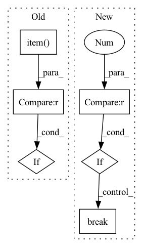

Pattern ID :35049
Before Change
totalloss += loss*len(j[-1])
for i in range(len(j[-1])):
totals += 1
if torch.argmax(out[i]).item() == j[-1][i].item() :
correct += 1
if auprc:
//pdb.set_trace()After Change
torch.save(model,save)
else:
patience += 1
if early_stop and patience > 20 :
break
scheduler.step()
In pattern: SUPERPATTERN
Frequency: 3
Non-data size: 6
Instances Fragment ID: 100122982
Project Name: pliang279/multibench
Commit Name: 62bf78b72dde077b9febf7fe1cc3e50c936fbcbb
Time: 2021-04-26
Author: ztwu_nil@zju.edu.cn
File Name: training_structures/Contrastive_Learning.py
M Class Name: AnonimousClass
N Class Name: AnonimousClass
M Method Name: train(14)
N Method Name: train(14)
M Parent Class:
N Parent Class:
M File Name: training_structures/Contrastive_Learning.py
N File Name: training_structures/Contrastive_Learning.py
M Start Line: 99
M End Line: 161
N Start Line: 99
N End Line: 157
Before Change
// 初始化一个用于存放模型翻译结果句子单词的列表
translation = []
// 遍历翻译输出字符的下标（注意：开始符"BOS"的索引0不遍历）
for j in range(1, out.size(1)):
// 获取当前下标的输出字符
sym = data.cn_index_dict[out[0, j].item() ]
// 如果输出字符不为"EOS"终止符，则添加到当前句子的翻译结果列表
if sym != "EOS" :
translation.append(sym)
// 否则终止遍历
else:
After Change
translation = sp_chn.decode_ids(decode_result)
trg.append(cn_sent[i])
res.append(translation)
if i == 3 :
break
res = [res]
bleu = sacrebleu.corpus_bleu(trg, res)
return float(bleu.score)
Fragment ID: 100122981
Project Name: hemingkx/chinesenmt
Commit Name: 9adf53cb6d9b875c9d173643a8d266d49d6f90eb
Time: 2020-12-15
Author: hemingkx@gmail.com
File Name: train.py
M Class Name: AnonimousClass
N Class Name: AnonimousClass
M Method Name: evaluate(2)
N Method Name: evaluate(2)
M Parent Class:
N Parent Class:
M File Name: train.py
N File Name: train.py
M Start Line: 53
M End Line: 84
N Start Line: 67
N End Line: 95
Before Change
out = model([i.float().cuda() for i in j[:-1]],True,training=False)
loss = criterion(out,j[-1].view(-1).cuda())
totalloss += loss*len(j[-1])
for i in range(len(j[-1])):
totals += 1
if torch.argmax(out[i]).item() == j[-1][i].item() :
correct += 1
if auprc:
//pdb.set_trace()After Change
torch.save(model,save)
else:
patience += 1
if early_stop and patience > 20 :
break
scheduler.step()
Fragment ID: 100122979
Project Name: pliang279/multibench
Commit Name: 0566c062ada67f67199bb5b63046fab1fd680654
Time: 2021-04-26
Author: ztwu_nil@zju.edu.cn
File Name: training_structures/Contrastive_Learning.py
M Class Name: AnonimousClass
N Class Name: AnonimousClass
M Method Name: train(14)
N Method Name: train(14)
M Parent Class:
N Parent Class:
M File Name: training_structures/Contrastive_Learning.py
N File Name: training_structures/Contrastive_Learning.py
M Start Line: 99
M End Line: 161
N Start Line: 99
N End Line: 157